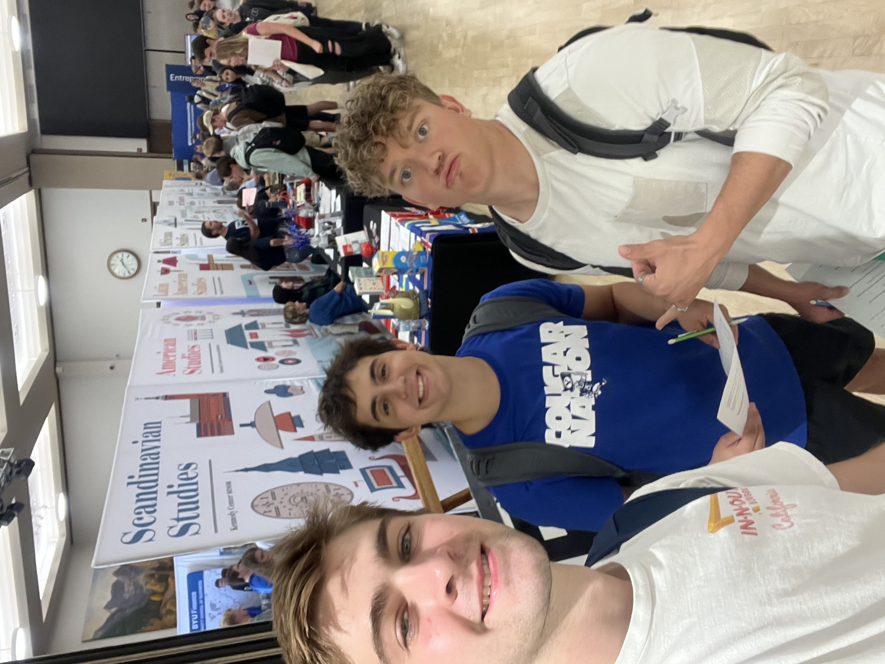

Media
Music and performance play a major role in my life. This section includes examples of creative work and media that reflect how I communicate ideas, connect with others, and stay engaged outside of formal work environments.

Writing and playing music is one of my favorite creative outlets.

Stage performance taught me confidence, teamwork, and discipline under pressure.
I enjoy being involved on campus and connecting with people.

Creative projects—big or small—are how I stay engaged and focused outside of class and work.
Featured Video
This performance highlights experience in musical theater, public performance, and collaboration as part of an award-winning International Thespian Festival production.